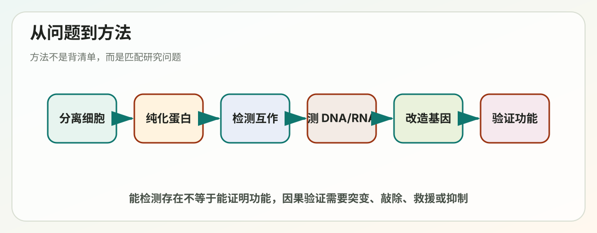
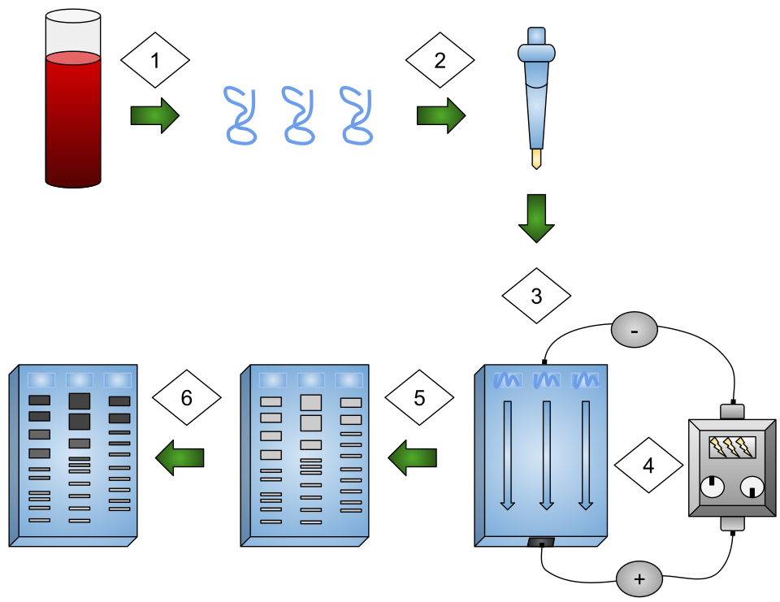

Lecture 08
第8讲学习讲义：Manipulating Proteins, DNA and RNA


对应课件：Lecture_8_Manipulating_Proteins_DNA_RNA.pdf
这一讲和前面几讲不同，它不再只讲“生命怎么运行”，而是讲：科学家怎么把这些过程拆开来观察、分离、测量和操控。
如果前 7 讲是在学原理，那么第 8 讲是在学工具箱。很多考题和科研思维都建立在这里。
这讲的核心问题
- 如何把特定细胞从组织里分离出来？
- 如何纯化蛋白并分析蛋白相互作用？
- 如何分析和操纵 DNA？
- 如何研究基因表达和基因功能？
一、为什么方法学这么重要
生物学不是只靠概念推理。任何关于“这个基因有功能”“这个蛋白会结合另一个蛋白”“这个细胞类型高表达某个 RNA”的结论，都必须有实验方法支撑。
所以学这一讲时，你要始终问两个问题：
- 这个方法测的到底是什么？
- 这个方法告诉我们什么，不能告诉我们什么？
二、细胞分离与培养：研究的起点
1. 从组织到单细胞悬液
课件一开始展示把组织切碎、酶消化、过滤等步骤。
逻辑是：
- 组织里的细胞彼此黏连。
- 要研究某类细胞，先要把它们分开。
常见步骤包括：
- 机械剪碎。
- 胰蛋白酶或胶原酶消化。
- 过滤去除大团块。
- 得到较纯的单细胞悬液。
2. 为什么细胞培养重要
细胞培养的意义在于：
- 能在可控环境下观察细胞行为。
- 能重复实验。
- 能进行药物处理、基因操作和成像。
但你也要知道限制：
- 体外培养不等于体内真实环境。
- 细胞状态可能因培养条件而改变。
三、如何富集目标细胞
1. FACS，荧光激活细胞分选
原理：
- 先给细胞贴上荧光标记。
- 让单个细胞依次通过检测系统。
- 根据荧光强度和散射特征进行分选。
优点：
- 可以高通量。
- 可以多参数同时分选。
- 纯度较高。
应用：
- 按表面标志分选免疫细胞。
- 分离表达特定荧光蛋白的细胞。
2. 磁珠抗体分选
原理：
- 把识别目标细胞表面分子的抗体连到磁珠上。
- 结合后用磁场把目标细胞拉出来。
优点：
- 操作相对简单。
- 适合快速富集。
局限：
- 参数维度通常不如 FACS 丰富。
3. 激光捕获显微切割 LCM
适合：
- 从组织切片中精准取出特定区域或单个细胞群。
意义：
- 保留组织空间信息。
- 特别适合异质组织样本。
四、特殊细胞体系：ES 细胞、杂交瘤、无细胞系统
1. ES cells 胚胎干细胞
特点：
- 来自早期胚胎内细胞团。
- 具有分化成多种细胞类型的潜能。
用途：
- 发育研究。
- 基因打靶。
- 构建转基因动物。
2. 杂交瘤 hybridoma
课件提到细胞融合和单克隆抗体。
核心逻辑：
- 把能产生特异抗体的 B 细胞与可无限增殖的细胞融合。
- 得到既能持续增殖又能稳定分泌一种抗体的细胞系。
这就是单克隆抗体制备的经典路线。
3. 无细胞系统 cell-free system
意义：
- 在更简化的体系里研究翻译、复制或其他生化过程。
- 便于控制变量和直接观察分子机制。
五、蛋白纯化：怎么把目标蛋白从混杂样品里分出来
1. 层析 chromatography
层析本质上是利用分子不同性质进行分离。
可依据的性质包括：
- 大小。
- 电荷。
- 疏水性。
- 特异结合能力。
你要把层析理解成“按物理化学特征筛分分子”的通用思路，而不是只记某一种柱子名字。
2. 标签纯化 tag purification
课件提到 genetically-engineered tags。
思路是：
- 给目标蛋白加一个易识别或易纯化的标签。
- 再利用标签特异结合进行纯化。
优点：
- 快。
- 特异性高。
- 适合重组蛋白表达体系。
六、蛋白分析：怎么知道分离出的蛋白是什么样
1. SDS-PAGE
这是基础中的基础。
原理：
- SDS 让蛋白带上近似按长度比例的负电荷，并展开。
- 在聚丙烯酰胺凝胶中，分离主要按大小进行。
因此：
- 小蛋白跑得更快。
- 大蛋白跑得更慢。
2. 二维电泳 2D gel
在两个不同维度分离蛋白，例如：
- 先按等电点。
- 再按大小。
意义：
- 分辨率更高。
- 适合比较复杂样本中的蛋白差异。
3. 质谱 mass spectrometry
如果你想知道“这个未知条带到底是谁”，质谱是关键工具。
它可用于：
- 鉴定蛋白身份。
- 分析修饰。
- 进行蛋白组学定量。
七、研究蛋白-蛋白相互作用
1. 为什么重要
细胞里很多蛋白不是单独工作的，而是形成复合体和通路。
所以“谁和谁相互作用”常常比“单个蛋白是什么”更重要。
2. 酵母双杂交 yeast two-hybrid
核心思路：
- 把两个待测试蛋白分别接到转录因子不同功能域上。
- 如果它们相互作用，两个功能域被带到一起。
- 报告基因被激活。
它告诉我们：
- 两个蛋白在该实验条件下是否可能直接或近距离相互作用。
但它不能简单等同于：
- 在所有真实细胞情境中都一定如此。
八、蛋白结构测定
1. X-ray diffraction，X 射线衍射 / 晶体学
适合：
- 得到高分辨率结构。
前提：
- 蛋白能形成高质量晶体。
2. NMR spectroscopy，核磁共振
适合：
- 研究溶液状态中的较小蛋白或局部动态。
3. 结构信息为什么重要
因为结构可以帮助回答：
- 活性位点在哪里。
- 结合界面在哪里。
- 突变为什么影响功能。
- 药物如何结合。
九、DNA 分析与操纵：从“看见 DNA”到“改造 DNA”
1. 凝胶电泳 gel electrophoresis
DNA 在凝胶里通常也可按大小分离。
用途：
- 判断片段长度。
- 检查 PCR 或酶切结果。
- 粗略纯化特定大小片段。
2. 标记 DNA
课件提到 purified DNA molecules can be specifically labeled。
目的包括：
- 用作探针。
- 追踪某段 DNA。
- 进行杂交检测。
3. 核酸杂交 nucleic acid hybridization
原理：
- 互补序列可以配对。
应用：
- 检测某段序列是否存在。
- 检测某种 RNA 或 DNA 的丰度。
- 定位特定核酸分子。
4. 测序 sequencing
课件说 DNA can be rapidly sequenced。
这意味着我们不仅能问“有没有这段 DNA”，还能直接问：
- 它的精确序列是什么。
- 是否有突变。
- 变异出现在什么位置。
十、DNA 克隆 cloning：现代分子生物学的经典操作
课件连续几页都在讲 DNA cloning，说明它很核心。
DNA 克隆的基本逻辑：
- 拿到目标 DNA 片段。
- 插入载体 vector。
- 导入宿主细胞。
- 让其复制扩增或表达。
它的意义极大：
- 可以保存和扩增 DNA 片段。
- 可以表达外源蛋白。
- 可以构建突变体和报告载体。
- 可以做功能验证。
十一、研究基因功能的两条路线：正向遗传学和反向遗传学
1. Classical / forward genetics 正向遗传学
思路：
- 先看到表型异常。
- 再去找是哪一个基因出了问题。
优点：
- 容易发现意想不到的重要基因。
难点：
- 定位致变基因有时较麻烦。
2. Reverse genetics 反向遗传学
思路：
- 先选定一个感兴趣基因。
- 再去改变它，看表型发生什么变化。
优点：
- 针对性强。
- 非常适合验证假设。
十二、如何定位突变基因
课件提到 haplotype blocks aid in search for mutations。
这类方法的核心思想是：
- 遗传变异不是完全随机孤立存在。
- 与目标突变一起遗传的标记可帮助逐步缩小区域。
换句话说，研究者不是在 30 亿碱基里盲找，而是借助连锁信息缩小搜索范围。
十三、定点突变 site-directed mutagenesis
这是非常重要的分子工具。
它让我们可以：
- 精确改掉某个碱基。
- 把某个氨基酸换成另一个。
- 测试某个位点是否关键。
如果你想证明“某个残基对酶活性至关重要”，定点突变往往是直接办法。
十四、动物遗传改造与 Cre 系统
1. 转基因和基因敲除
动物可以被遗传改造，用来研究：
- 基因缺失会怎样。
- 额外表达某基因会怎样。
- 某基因在特定组织是否重要。
2. Cre recombinase
Cre 可识别特定 lox 位点并进行重组。
意义：
- 可以做条件性基因敲除。
- 让一个基因只在特定组织、特定时间被删除。
这比全身敲除更精细，也更适合研究发育或致死基因。
十五、如何观察基因在哪里、什么时候表达
1. Reporter gene 报告基因
把目标基因调控区连到一个容易检测的基因上，例如荧光蛋白。
这样就能观察：
- 该调控区何时活跃。
- 在哪些细胞活跃。
2. RNA FISH
通过荧光探针直接检测细胞内 RNA。
优点：
- 有空间分辨率。
- 可看到细胞内定位和组织分布。
3. RT-PCR
先把 RNA 逆转录成 cDNA，再 PCR 扩增。
用途：
- 检测某个转录本是否存在。
- 粗略或定量分析表达量。
4. cDNA microarray
通过大规模杂交比较很多基因的表达水平。
优点：
- 一次看很多基因。
局限：
- 通常依赖已知探针设计。
- 动态范围和新转录本发现能力有限于 RNA-seq。
5. RNA-seq
这是现代最强大的转录组技术之一。
它可以：
- 定量 RNA 丰度。
- 发现新转录本。
- 分析可变剪接。
- 比较不同样本表达谱。
十六、理解“方法测量层级”很重要
你可以把这些方法按层级整理：
- 细胞层级：分选、培养、显微切割。
- 蛋白层级：纯化、SDS-PAGE、质谱、相互作用、结构测定。
- DNA 层级：克隆、测序、杂交、突变。
- RNA 层级：RT-PCR、RNA FISH、microarray、RNA-seq。
- 个体层级：转基因动物、条件性敲除。
这样一来，你看到研究问题时就能快速匹配工具。
十七、把这一讲串成一句话
现代细胞生物学通过细胞分离、蛋白纯化、核酸分析、基因克隆、突变构建、转基因动物和转录组检测等方法，把生命过程拆解成可观察、可操控、可验证的实验问题，从而把“猜测”变成“证据”。
十八、常见误区
- “能检测到结合”不等于“一定在体内有功能”。方法结果要结合上下文解释。
- “细胞培养结果就等于体内情况”不对。
- “SDS-PAGE 可以告诉你蛋白功能”不对，它主要告诉你大小和纯度相关信息。
- “DNA 克隆只是复制 DNA”太窄，它还是表达、突变和功能研究平台。
- “RNA-seq 什么都能说明”也不对，它主要反映 RNA 层级，不直接等于蛋白活性。
十九、你必须会的关键词
- FACS：荧光激活细胞分选。
- Magnetic beads：磁珠分选。
- Laser capture microdissection：激光捕获显微切割。
- Hybridoma：杂交瘤。
- Chromatography：层析。
- SDS-PAGE：十二烷基硫酸钠聚丙烯酰胺凝胶电泳。
- Mass spectrometry：质谱。
- Yeast two-hybrid：酵母双杂交。
- X-ray crystallography：X 射线晶体学。
- DNA cloning：DNA 克隆。
- Forward genetics：正向遗传学。
- Reverse genetics：反向遗传学。
- Site-directed mutagenesis：定点突变。
- Reporter gene：报告基因。
- RT-PCR：逆转录 PCR。
- RNA-seq：RNA 测序。
二十、自测题
1. FACS 和磁珠分选的共同点与差别是什么？
答题关键：
- 都能富集目标细胞。
- FACS 多参数高通量，磁珠更简单快速。
2. 为什么 SDS-PAGE 主要按大小分离蛋白？
答题关键：
- SDS 使蛋白近似带等比例负电并展开，迁移差异主要由大小决定。
3. 酵母双杂交能说明什么，不能说明什么？
答题关键：
- 可提示蛋白相互作用可能性。
- 不能单独证明所有生理情境下都发生且有功能意义。
4. 正向遗传学和反向遗传学最大的区别是什么？
答题关键：
- 一个从表型找基因，一个从基因看表型。
5. RNA FISH、RT-PCR、microarray 和 RNA-seq 各自适合什么问题？
答题关键：
- FISH 看空间定位。
- RT-PCR 看特定转录本。
- microarray 做大规模已知基因表达比较。
- RNA-seq 做更全面转录组分析。
二十一、考前速记版
- 细胞研究常先做分离和培养。
- FACS、磁珠和显微切割是常见细胞富集方法。
- 层析、SDS-PAGE、质谱和结构测定构成蛋白分析核心工具箱。
- 电泳、杂交、测序和克隆构成 DNA 操作基础。
- 正向遗传学从表型找基因，反向遗传学从基因看表型。
- 报告基因、RT-PCR、RNA FISH、microarray 和 RNA-seq 用于研究表达和功能。
二十二、深入扩展：怎么根据研究问题选方法
很多方法学学习的痛点是：每个方法看起来都懂，但一旦遇到真实问题，不知道该选什么。最好的办法是从“问题类型”反推工具。
如果你的问题是“这个细胞群是谁”
优先想到：
- FACS：按表面标志和荧光分群。
- 免疫染色：看蛋白标志。
- RNA-seq / 单细胞 RNA-seq：看表达谱。
如果你的问题是“这个蛋白是什么、多少、有多纯”
优先想到：
- SDS-PAGE：看大小和纯度。
- Western blot：看是否存在及相对丰度。
- Mass spectrometry：鉴定身份和修饰。
如果你的问题是“这两个蛋白会不会相互作用”
优先想到：
- 酵母双杂交：筛相互作用可能性。
- Co-immunoprecipitation：看细胞内复合体关联。
- Pull-down：看体外结合。
如果你的问题是“这个基因在哪里表达”
优先想到：
- Reporter gene：看调控区驱动表达位置。
- RNA FISH：看 RNA 空间定位。
- 原位杂交：看组织中的核酸分布。
如果你的问题是“这个基因到底有没有功能”
优先想到：
- 敲除 / 敲低。
- 过表达。
- 定点突变。
- 条件性删除。
二十三、SDS-PAGE 和 size exclusion chromatography 不要混
这两个都和“大小”有关，但层级不同。
SDS-PAGE
- 是分析方法。
- 蛋白先被 SDS 展开并带负电。
- 主要按多肽长度大小分离。
- 更常用于看样品组成和纯度。
凝胶过滤 / size exclusion chromatography
- 是纯化方法。
- 蛋白在更接近天然状态下按流体动力学大小分离。
- 更适合分离复合体、看聚集状态。
所以一个更像“上胶看结果”，一个更像“上柱分样品”。
二十四、为什么标签纯化很方便，但也可能带来伪影
给蛋白加 tag 的好处很明显：
- 容易纯化。
- 容易检测。
- 容易追踪定位。
但也要警惕：
- tag 可能影响蛋白折叠。
- 可能影响亚细胞定位。
- 可能遮挡结合界面。
- 可能改变稳定性。
所以经验上常要检查：
- N 端加 tag 和 C 端加 tag 是否效果不同。
- 带 tag 的蛋白是否仍保留原功能。
二十五、为什么质谱这么强
因为它把“看见一个条带”推进到了“知道它是谁、改了哪里、数量大概多少”。
在现代生物学里，质谱的价值体现在：
- 不依赖提前猜身份。
- 可以大规模并行分析很多蛋白。
- 可以检测翻译后修饰，如磷酸化、乙酰化等。
这让蛋白研究从“单个蛋白时代”走向“蛋白组时代”。
二十六、酵母双杂交为什么既经典又要谨慎解释
它经典，是因为：
- 简单。
- 可高通量筛库。
- 能快速发现潜在相互作用。
它要谨慎，是因为：
- 在酵母核内的人工系统里发生，不等于在原始细胞环境里一定发生。
- 某些蛋白需要翻译后修饰或膜环境，双杂交未必能正确体现。
- 也可能有假阳性和假阴性。
所以最稳妥的思路是：
- 双杂交给你线索。
- 再用更接近生理环境的方法验证。
二十七、为什么 DNA 克隆是分子生物学的“通用底座”
因为一旦一个 DNA 片段进入可操控载体，后续很多事情都能做：
- 扩增。
- 测序。
- 突变。
- 表达蛋白。
- 做报告系统。
- 做基因编辑供体。
所以很多实验路线虽然看起来不同，底层都离不开克隆。
二十八、定点突变为什么特别适合做“因果验证”
如果你只是观察到“这个位点很保守”，那还只是相关性。
但如果你把该位点精确改掉，再看到：
- 酶活下降。
- 结合消失。
- 定位改变。
- 表型改变。
那你就从“猜它重要”前进到了“证明它重要”。
这就是 site-directed mutagenesis 的力量。
二十九、Reporter gene 和 RT-PCR 回答的问题并不一样
Reporter gene 更擅长回答
- 某段调控区在什么时候、哪里有活性。
- 这个启动子 / 增强子是否能驱动表达。
RT-PCR 更擅长回答
- 某个转录本是否存在。
- 丰度大概多少。
- 不同处理组之间表达是否变化。
所以 reporter 更偏“调控区活性和空间信息”，RT-PCR 更偏“转录本本身”。
三十、microarray 和 RNA-seq 怎么比较
microarray
优点：
- 成熟。
- 相对便宜。
- 适合已知基因的大规模比较。
局限：
- 依赖预设探针。
- 对新转录本和复杂剪接不够灵活。
RNA-seq
优点：
- 范围更广。
- 可发现新转录本。
- 可看剪接和等位表达等更复杂信息。
局限：
- 数据分析更复杂。
- 成本和计算要求通常更高。
三十一、为什么条件性敲除比全身敲除更常用
因为很多基因：
- 全身敲除会胚胎致死。
- 或在多个组织都有功能，难以分辨具体来源。
条件性敲除可以回答更精细的问题：
- 这个基因在肝细胞是不是必须的。
- 它在成年阶段是否仍然重要。
- 表型来自发育缺陷还是维持缺陷。
这就是 Cre-lox 系统在动物研究里价值极高的原因。
三十二、方法学题最容易丢分的地方
1. 把“能检测存在”误说成“能证明功能”
例如：
- Western blot 只能证明蛋白存在和大小相关信息，不能直接证明它有活性。
2. 把“体外结合”误说成“体内一定发生”
例如：
- 纯化蛋白 pull-down 有结合，不等于细胞里一定在同一时间同一地点相遇。
3. 把“RNA 水平变化”误说成“蛋白功能变化”
中间还隔着翻译、降解、修饰和活性调控。
4. 忽略对照组
方法学题里如果不提阳性对照、阴性对照、空载体对照、野生型对照，答案往往不完整。
三十三、如果你要设计一个最基础的功能验证路线
以“某基因 X 是否促进细胞增殖”为例，最基本路线可以是：
1. 先测表达：RT-PCR / Western blot。 2. 再做操控：敲低或敲除 X。 3. 看表型：增殖实验、细胞周期分析。 4. 做救援实验：重新表达野生型 X。 5. 如果想看关键位点，再做定点突变。
这个设计思路很常见，因为它把：
- 相关性。
- 操控。
- 因果验证。
- 机制细化。
串成了一条完整证据链。
三十四、学完方法学后最重要的能力
不是死背 20 个技术名字，而是形成这三个习惯：
- 先问问题类型。
- 再选最能直接回答该问题的层级和方法。
- 最后明确这个方法的边界和需要什么验证。
如果你能做到这一点，第 8 讲就不只是“记技术”，而是真正开始具备科研思维了。